Ejemplo práctico
Contents
Ejemplo práctico#
Creación de proyecto Ecore Model#
Creamos un nuevo proyecto accediento al menú
File > New > Other..
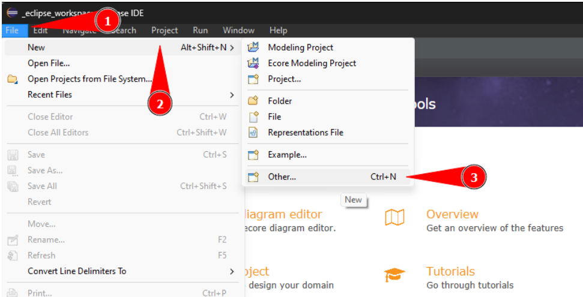
Continuamos y elegimos la opción
Eclipse Modeling Frameworky dentro del mismo el tipoEcore Modeling Projecty damos clic enNext >
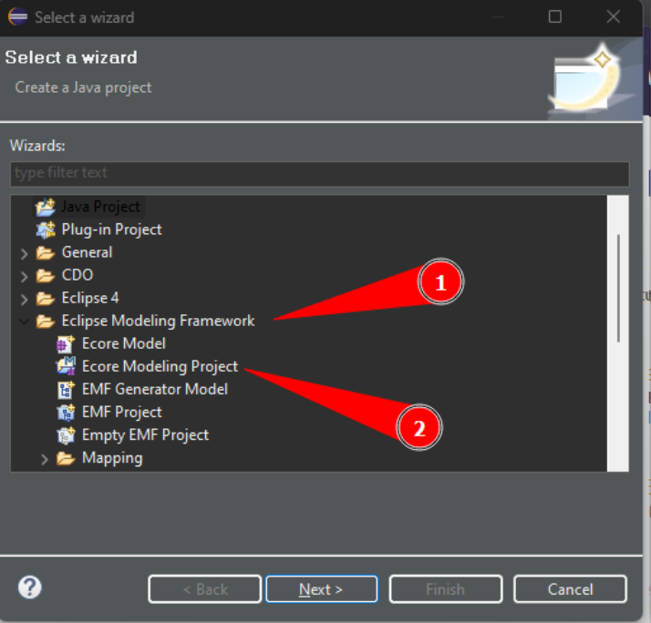
Colocamos un nombre a nuestro poryecto y damos click en
Next >
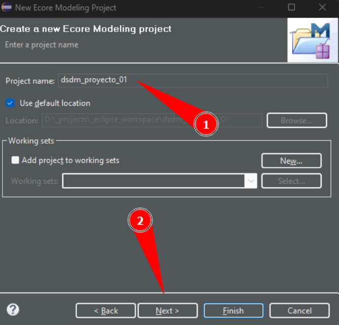
Damos click en
Next >
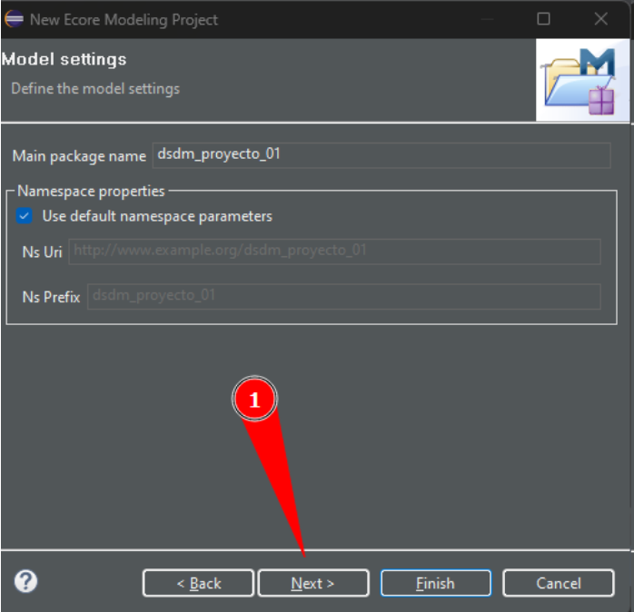
Damos click en
Finish
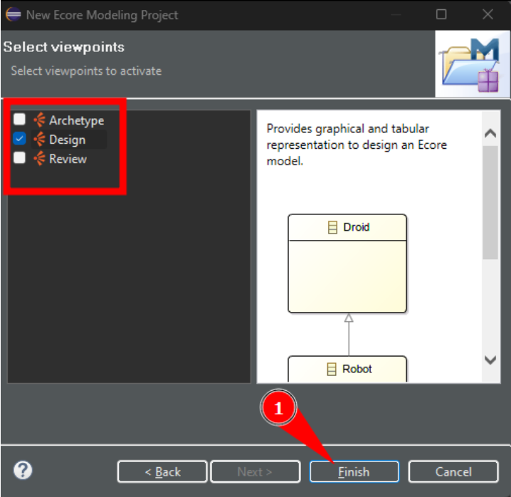
Arrastramos y soltamos de la Paleta el componente que corresponde para crear 2 clases
EstudianteyMatrícula, agregamos un atributo a cada clase e incluímos la relación que corresponde de1 estudiante puede tener de 0 a muchas matrículas
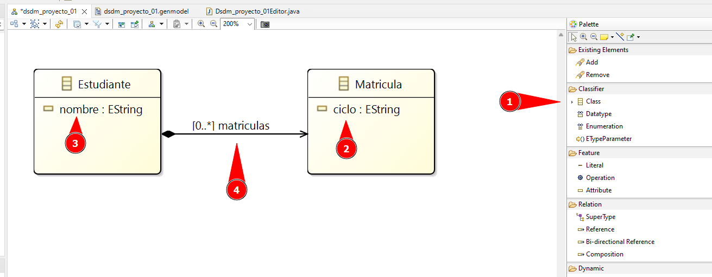
Del
Model Explorerabrimos el archivo.genmodelque se encuentra dentro de la carpetamodel
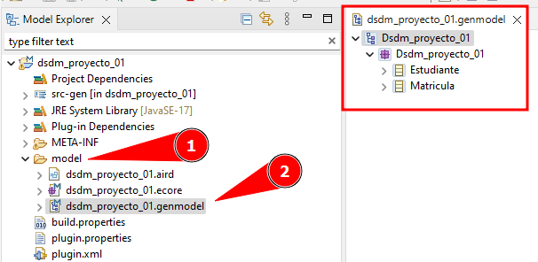
Damos clic derecho sobre el primer elemento del árbol
Dsdm_proyecto_01y damos clic en la opciónGenerate Model Code, para de esta forma el plugin nos genere el código fuente en el directoriosrc-gen
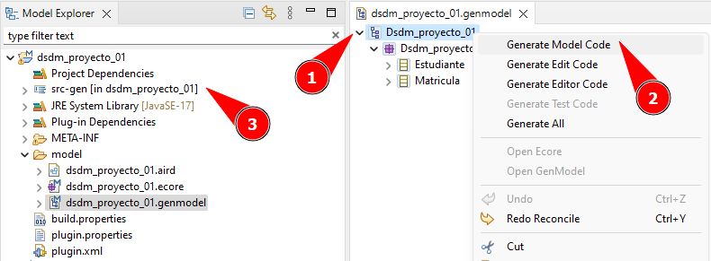
Damos clic derecho sobre el primer elemento del árbol
Dsdm_proyecto_01y damos clic en la opciónGenerate Edit Code, para de esta forma el plugin nos genere un nuevo proyecto con la extensión.edit
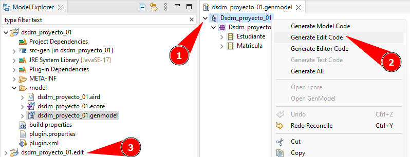
Damos clic derecho sobre el primer elemento del árbol
Dsdm_proyecto_01y damos clic en la opciónGenerate Editor Code, para de esta forma el plugin nos genere un nuevo proyecto con la extensión.editor
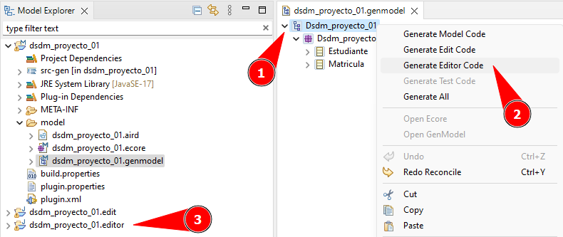
Creación de nuevo proyecto para integrar y validar el modelo creado#
Ahora damos clic derecho sobre el tercer proyecto con extensión
.editory elegimos la opciónRun Asy a continuación damos clic en la opciónEclipse Application, esto nos generará una nueva ejecución de eclipse con la integración de nuestro modelo.
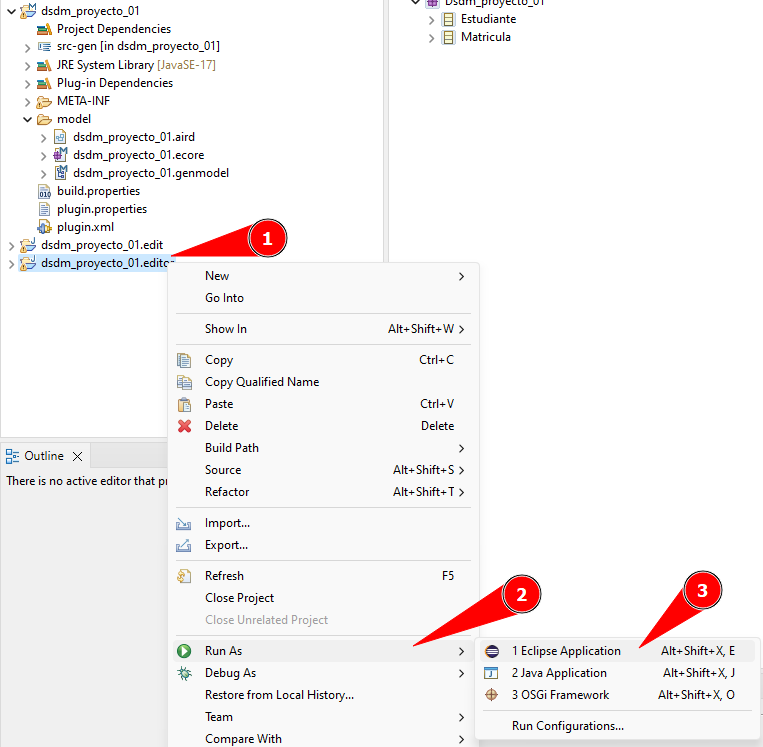
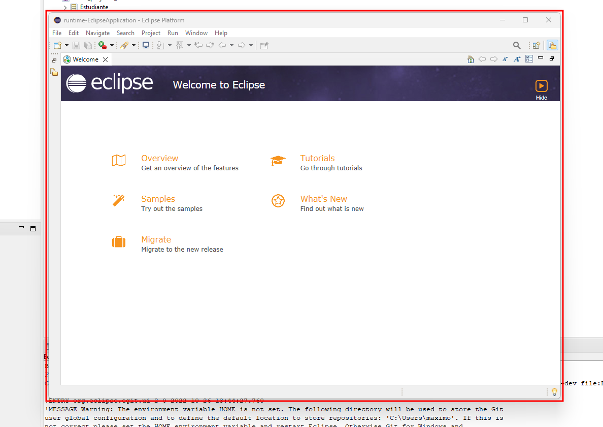
Dentro de la nueva instancia de eclipse creamos un nuevo proyecto de tipo
Java Project.
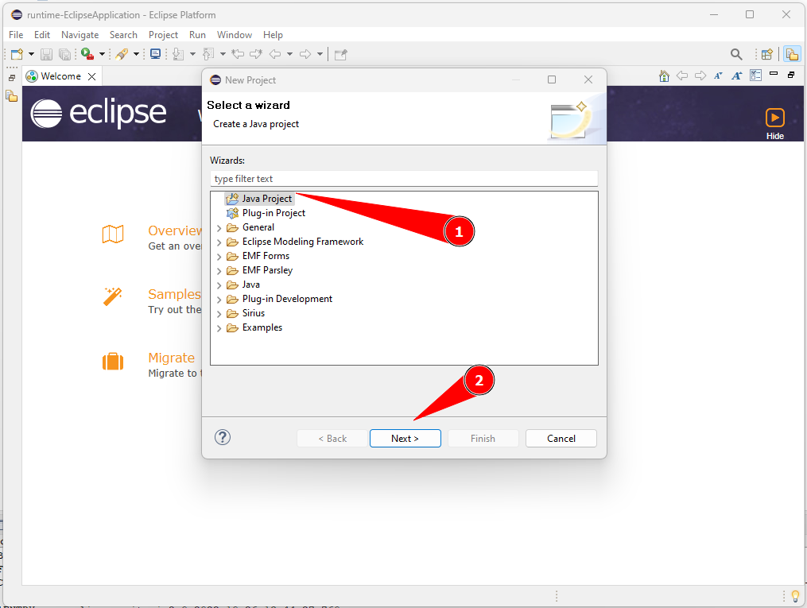
Damos clic derecho sobre el proyecto ya vamos a agregar un nuevo elemento al mismo para ello nos vamos a las opciones
New > Other....
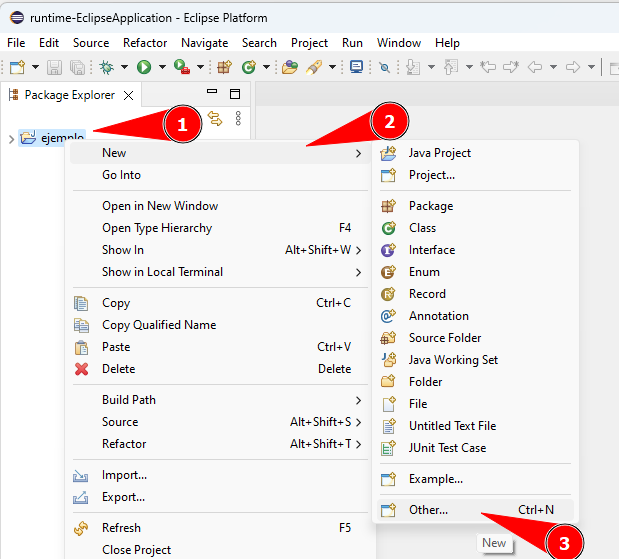
Dentro de la opción
Example EMF Model Creation Wizardselegimos la opciónDsdm_proyecto_01 Model, que corresponde a nuestro proyecto inicial y damos clic enNext >.
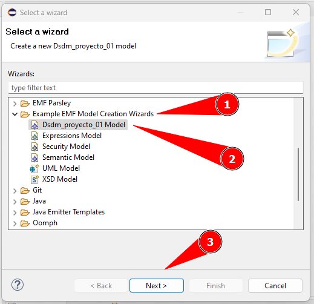
Ahora nos pregunta que modelos deseamos crear, podemos elegir entre cualquiera de los creamos en el proyecto original, en este caso elegiremos
Estudiantey damos clic enfinish.
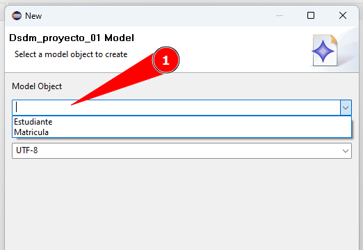
Ahora dentro del archivo creado damos clic derecho en el modelo
Estudiantey podremos apreciar que nos permite crear elementos de tipoMatriculaesto nos permite apreciar que nuestro modelo del proyecto original es correcto y que podemos crear muchos objetos de tipoMatriculapara el modeloEstudiante.
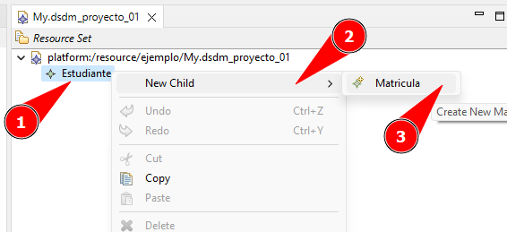
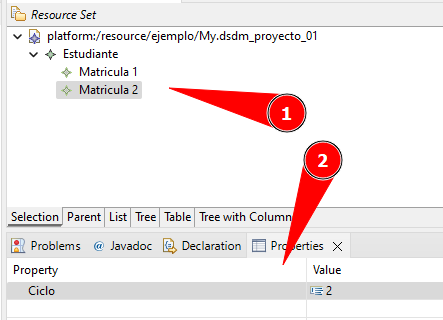